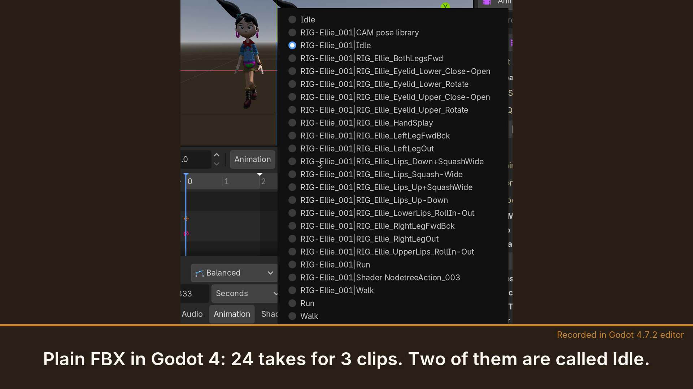

Guides / Blender animation export
Blender FBX export: why you get Rig|Idle, duplicate takes, and an Idle with the wrong pose
For Unity, Godot and Unreal. Measured on Blender 4.2 and 5.0 and in Godot 4.7. Published 6 November 2026.
1. The symptom
You export your character from Blender as FBX with the default settings and import it into Unity or Godot. Instead of Idle, Walk and Run you get:
- takes named
Rig|Idle, with the armature's name in front; - each clip twice: an
Idleand aRig|Idle; - extra takes you never made as clips: face poses, a prop's action, a pose library;
- and one of the two Idles has the legs of another clip.
2. What the default FBX settings do
In the FBX exporter's Bake Animation section, NLA Strips and All Actions are both on by default (Blender's Python API reference for bpy.ops.export_scene.fbx lists bake_anim_use_nla_strips=True and bake_anim_use_all_actions=True). The same reference describes what each does:
- NLA Strips exports each non-muted NLA strip as its own take. So every clip on an unmuted NLA track, which is what Push Down gives you, becomes a take under the clip's plain name,
Idle. - All Actions exports each action as its own take, and an animated object gets every action compatible with it. So the same clip is written a second time, as
Rig|Idle, and every other action in the file that fits the rig is added too.
3. Measured: a two-clip test
One armature with an IK leg and two clips, each on its own unmuted NLA track, no active action. "Idle" keys only the spine. "Reach" keys only the IK target. We exported with Blender's FBX defaults, re-imported the file and compared every deform bone with the live rig at five frames per clip (1 mm and 0.001 rad tolerances).
| Take in the file | Worst bone, position / rotation |
|---|---|
Idle (from the NLA strip) | 0 m / 0 rad |
Rig|Idle (from All Actions) | 0.60 m / 0.82 rad |
Reach (from the NLA strip) | 0 m / 0.0007 rad |
Rig|Reach (from All Actions) | 0.16 m / 0.25 rad |
Four takes for two clips, and two of them wrong. In a Unity project, that is two clips called Idle, one of them broken. (When Blender re-imports an FBX file it puts the armature's name in front of each take again, so in a Blender re-import these four show up as Rig|Idle, Rig|Rig|Idle and so on.)
4. Measured on production characters, in Godot 4.7
The same thing happens on real characters, where the file holds more actions:
- Rain (Blender Studio), with Idle, Walk and Run on unmuted NLA tracks and her legs in IK: 23 takes for 3 clips, each clip twice plus 17 face-rig pose actions. In
RIG-rain|Idleher legs run: the worst bone is 0.33 m off. - Ellie (Blender Studio), with Idle, Walk and Run on unmuted NLA tracks: 24 takes for 3 clips, each clip twice plus 16 rig pose actions, a camera pose library and a shader action. Two of the takes are called Idle.
- A third character, built from scratch by a tester (IK legs, Idle, Walk and Attack on unmuted tracks): 6 takes for 3 clips in Godot, with the
Knight|takes off by up to 0.605 m.

RIG-rain|Idle Run's legs leak in (0.33 m off). Right: Rigbake's export, 3 takes, posed as in Blender. Character: Rain Rig (CC) Blender Foundation | studio.blender.org, used under CC BY 4.0; we added the animation clips and simplified two eye materials for the engine export.
5. Why one of them is wrong
A clip that doesn't key a channel does not reset it. When the exporter writes the extra Rig|Clip takes, a channel that the clip leaves alone keeps a value from another clip. In the two-clip test, Idle doesn't key the IK target, so the target stays where Reach put it, and the leg in the extra Idle take follows it: 0.60 m off. On Rain, the IK feet keyed by Run end up in her Idle the same way.
6. Stash instead of Push Down?
A clip you stash (the Action Editor's Stash button) sits on a muted NLA track, and NLA Strips skips muted tracks. So a stashed clip is written once, not twice, as Rig|Clip. It can still be wrong, for the same reason as above: a tester measured a stashed Attack clip 0.56 m off in Blender 4.2, and our own two-clip test with stashed clips gives an Idle 0.60 m off.
7. Avoiding it for free
- One clip per file. A file with one action and nothing on the NLA exports correctly with the FBX defaults: in our single-rig test the take matched within 0.01 mm. For a clip library, that means making each clip the only action, exporting clip by clip, and renaming the
Rig|Cliptake in the engine. - For Godot, glTF instead of FBX. Blender's default glTF export of the same two-clip test was exact, with one animation per clip. It names them after the NLA tracks (
IdleTrack,ReachTrack), so name your tracks after your clips.
If your file has one action and nothing on the NLA, Blender's default FBX export is correct, and you don't need Rigbake: rename the take in your engine and you're done.
8. With Rigbake
Rigbake, our Blender add-on, bakes each clip from the rest pose, so no channel leaks in from another clip, and writes one take per action, named after the action: Idle, not Rig|Idle. In the two-clip test both takes were exact. On Rain the file holds exactly Idle, Run and Walk, and on the tester's character exactly Attack, Idle and Walk. In Godot 4.7, with the AnimationPlayer's import Optimizer off, every one of Rain's deform bones was within 0.00004 m of Blender, and the tester's clips matched exactly. (Godot's Optimizer is on by default and thins keys: with it on, Rain's Run was up to 2.9 cm off. The Godot import tips show both settings.) Rigbake for Blender.
9. A note for Unity and Unreal users
These results were measured by re-importing the files in Blender (4.2 and 5.0; Blender 4.5's FBX importer misreads files with several takes, so it can't be used to check them) and by importing them in Godot 4.7, not in Unity or Unreal. We have not opened these files in either.
Related: Blender export has no animations: the control-rig case and Do you need to bake constraints before export?